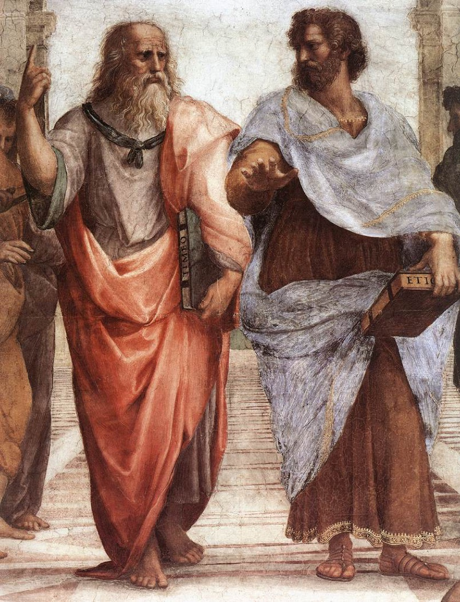
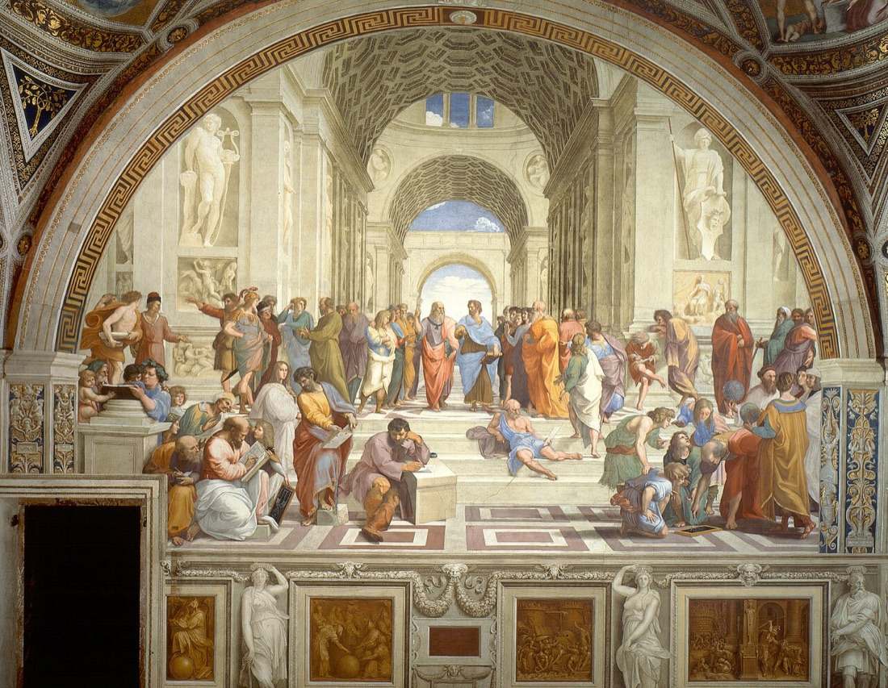
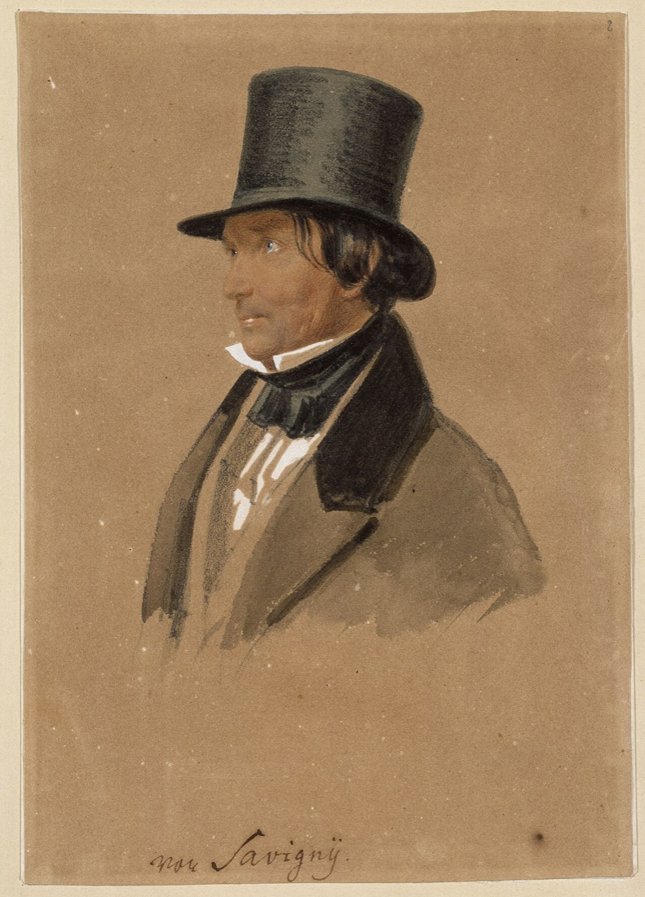
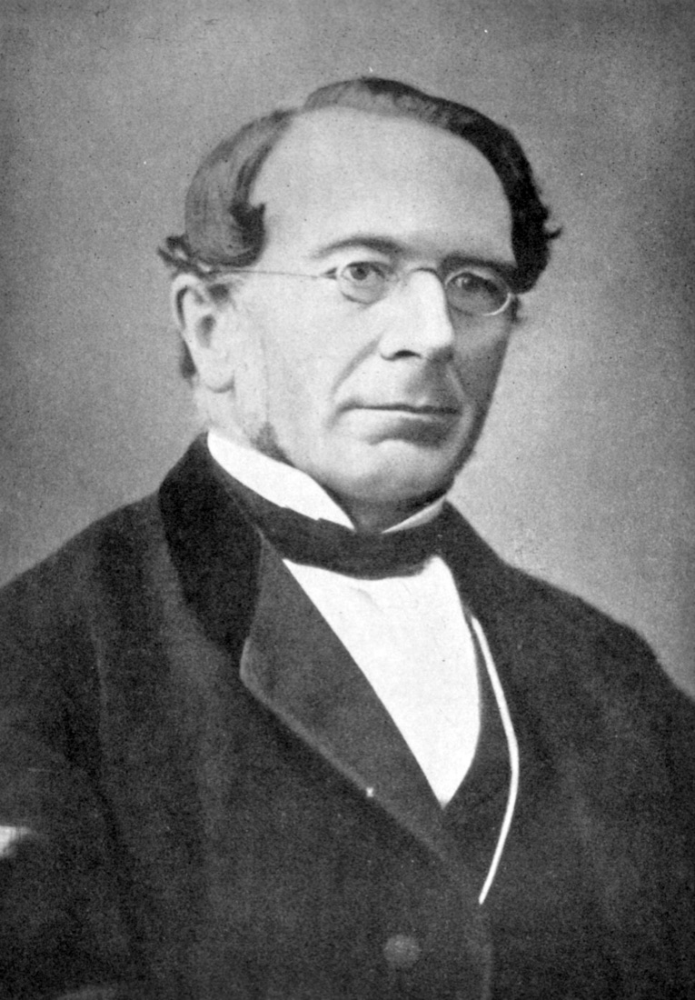
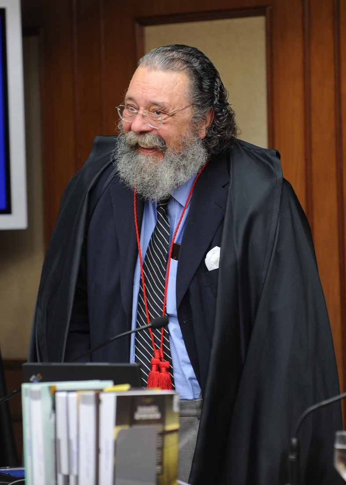

Métodos e tipos de interpretação
Uma abordagem crítica

O que você vê?

Platão aponta para cima.
Aristóteles estende a mão para o chão.
Ninguém escreveu isso no quadro.
Nós interpretamos.
Com a lei é igual: o sentido não vem pronto.
As Marchas da Maconha
ADPF 187 · STF, 2011
Passeatas pediam a legalização da maconha.
Em várias cidades, juízes proibiram as marchas.
“Fazer, publicamente, apologia de fato criminoso ou de autor de crime.”Código Penal, art. 287. Pena: detenção, de três a seis meses, ou multa.
Marchar pela legalização é...
apologia de crime?
Vamos testar a pergunta com os métodos de interpretação.
Savigny
O cânon de elementos

Os quatro elementos de Savigny
O que as palavras dizem?
No caso: o que é “apologia”? Elogiar o crime ou pedir a mudança da lei?
Como as partes da norma se ligam?
No caso: quem pede que algo deixe de ser crime está elogiando o crime?
Como a norma se encaixa no conjunto?
No caso: a Constituição garante liberdade de expressão e de reunião (art. 5º, IV e XVI).
De onde veio a norma?
No caso: o Código Penal é de 1940, do Estado Novo.
Ihering
O elemento teleológico

Para que serve a norma?
No caso: o art. 287 protege a paz pública. Uma passeata pacífica a ameaça?
Cinco perguntas ao texto
E se os métodos apontarem para lados diferentes?
Qual deles vale?
Na porta de uma biblioteca:
“Entrada permitida apenas para advogados”
Advogados são os inscritos na OAB.
O texto disse exatamente o que queria.
Advogados são todos os operadores do direito.
O texto disse menos do que queria.
Advogados são apenas os inscritos e quites com a OAB.
O texto disse mais do que queria.
E o estudante de Direito, entra?
Depende de quem interpreta a placa.
Abordagens críticas
à metodologia clássica
Cinco métodos. Três tipos de resultado.
Quem escolhe?
Os métodos são retórica.
Dão aparência técnica a uma escolha.
A neutralidade do jurista é suposta.
Primeiro vem a decisão. Depois, o método que a justifica.
Não há hierarquia entre os métodos.
Nenhuma regra diz qual deles usar primeiro.

Os métodos não decidem.
Eles justificam o que já foi decidido.
É o problema do poder discricionário, que acompanha o curso desde Kelsen.
Interpretação conforme a Constituição

A lei admite mais de um sentido?
Vale o que cabe na Constituição.
O texto da lei continua valendo.
Cai só o sentido inconstitucional.
A PGR pediu ao STF:
interpretação conforme a Constituição do art. 287 do Código Penal.

Defender a legalização não é apologia de crime.
O fundamento
O art. 287 continua no Código Penal.
Só não alcança quem pede a mudança da lei.
Dos cinco métodos, qual pesou mais na decisão do STF?
E quem escolheu esse método?
Para levar
Fim
Vitor Medrado
Imagens do Wikimedia Commons: A Escola de Atenas, de Rafael (domínio público); Marcha da Maconha, Rio de Janeiro, 2014 (Tomaz Silva/Agência Brasil, CC BY 3.0); Savigny, desenho de Franz Krüger (domínio público); Rudolf von Ihering (domínio público); biblioteca jurídica (Jrcla2, domínio público); Eros Grau (Fábio Rodrigues Pozzebom/ABr, CC BY 3.0 BR); Constituição de 1988 (Moacir Ximenes, domínio público); Supremo Tribunal Federal (Leandro Neumann Ciuffo, CC BY 2.0); Celso de Mello (José Cruz/ABr, CC BY 3.0 BR). Fotos recortadas.